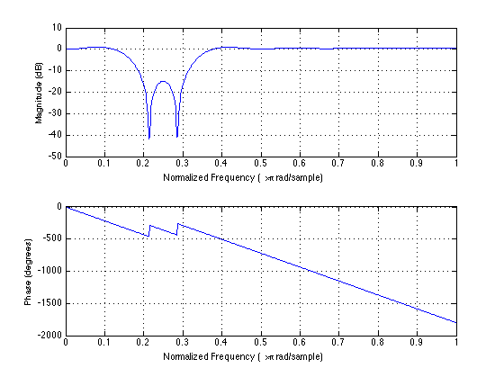
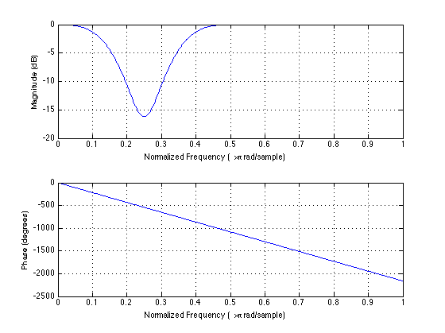
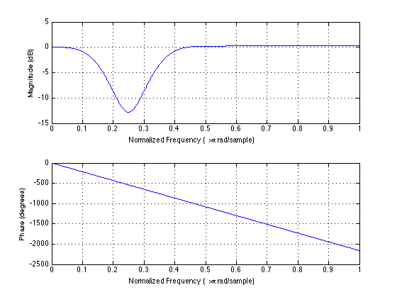

Problem 10.2
% FIR Window Bandstop filter designed using the FIR1 function. % All frequency values are normalized to 1. N = 24; % Order Fc1 = 0.16666666667; % First Cutoff Frequency Fc2 = 0.33333333333; % Second Cutoff Frequency flag = 'scale'; % Sampling Flag % Create the window vector for the design algorithm. win = rectwin(N+1); % Calculate the coefficients using the FIR1 function. hrect = fir1(N, [Fc1 Fc2], 'stop', win, flag); figure freqz(hrect,1) hhamm = fir1(N, [Fc1 Fc2], 'stop', hamming(25), flag); figure freqz(hhamm,1) hbart = fir1(N, [Fc1 Fc2], 'stop', bartlett(25), flag); figure freqz(hbart,1)  